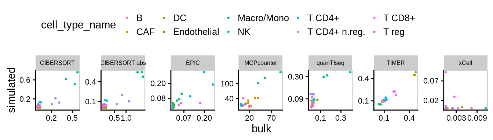
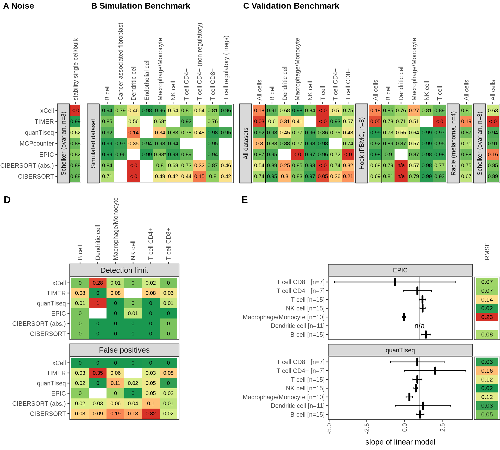
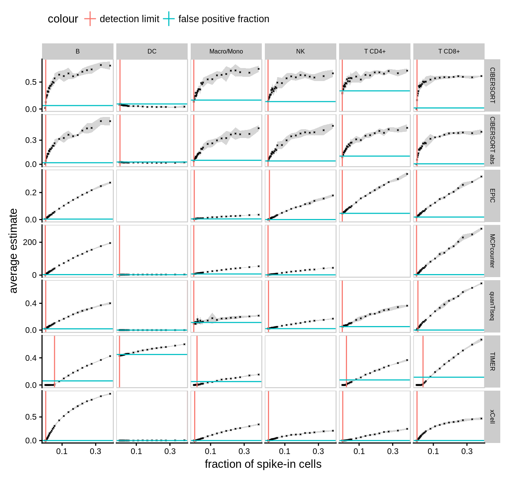
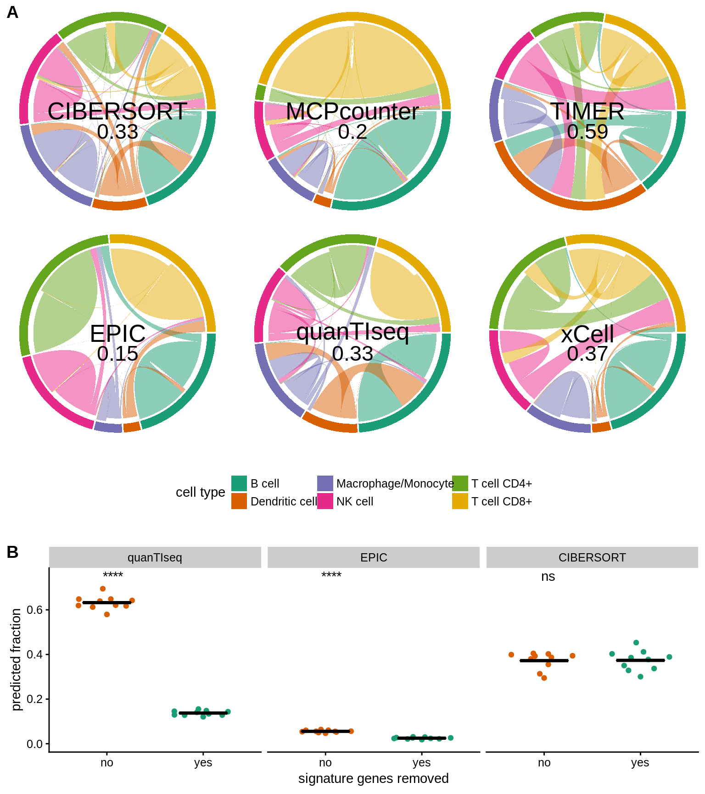

8 Creating publication ready figures
fun_breaks3 = function(limits) {
breaks = signif(max(limits) * c(0.25, 0.75),1)
names(breaks) = attr(breaks, "labels")
breaks
}
tmp_cor = res_methods_validity$all_results_mapped %>%
group_by(method) %>%
do(make_cor(.$bulk, .$simulated)) %>%
mutate(pearson=round(pearson, 2)) %>%
inner_join(method_names)
res_methods_validity$all_results_mapped %>%
inner_join(cell_type_names) %>%
inner_join(method_names) %>%
ggplot(aes(x=bulk, y=simulated)) +
geom_point(aes(colour=cell_type_name), size=.5) +
facet_wrap(~method_name, scales="free", nrow=1) +
theme(legend.position = "top") +
geom_text(data=tmp_cor, mapping=aes(label=paste0("r=", pearson), x=0, y=0), hjust=0, vjust=-8, size=2.4) +
panel_border() +
scale_x_continuous(breaks=fun_breaks3) +
scale_y_continuous(breaks=fun_breaks3) +
theme(strip.text=element_text(size=6),
panel.spacing = unit(2, "mm"), axis.text = element_text(size=8))
fun_breaks = function(limits) {
breaks = signif(max(limits) * c(0.25, 0.75),1)
names(breaks) = attr(breaks, "labels")
breaks
}
corr_annot = res_mixing_study$correlations %>%
select(method, cell_type, pearson) %>%
mutate(pearson = round(pearson, 2)) %>%
inner_join(method_names) %>%
inner_join(cell_type_names) %>%
distinct()
plot_mixing = res_mixing_study$all_results %>%
inner_join(method_names) %>%
inner_join(cell_type_names) %>%
ggplot(aes(x=true_fraction, y=estimate)) +
geom_point(size=.2) +
geom_text(data=corr_annot, mapping=aes(label=paste0("r=", pearson), x=-Inf, y=-Inf), hjust=-0.1, vjust=-8, size=2.4) +
facet_grid(method_name ~ cell_type_name, scales="free") +
stat_smooth(aes(color=method), method="lm", size=.4) +
scale_color_manual(values=color_scales$methods, na.value="grey") +
scale_x_continuous(breaks=c(.2)) +
scale_y_continuous(breaks=fun_breaks) +
theme(legend.position = "none", strip.text=element_text(size=6),
panel.spacing = unit(.5, "mm"), axis.text = element_text(size=8)) +
ylab("estimated fraction") +
xlab("true fraction") +
panel_border()
ggsave("../results/figures/correlations_mixing.pdf", width=WIDTH, height=140, units = "mm")
ggsave("../results/figures/correlations_mixing.png", width=WIDTH, height=140, units = "mm", dpi=600)8.1 Benchmark results

Figure 8.1: Benchmark results main figure.
8.2 detection limit / false positive figure
data = res_sensitivity$all_results %>%
filter(cell_type == input_cell_type) %>%
mutate(frac_immune_cells = as.numeric(frac_immune_cells)/100) %>%
filter(frac_immune_cells < .4) %>%
inner_join(method_names) %>%
inner_join(cell_type_names)
data_detection_limit = res_sensitivity$sensitivity %>%
rename(cell_type = input_cell_type) %>%
inner_join(method_names) %>%
inner_join(cell_type_names) %>%
mutate(min_frac = as.numeric(min_frac)/100)
data_false_positives = res_sensitivity$specificity %>%
group_by(method, cell_type) %>%
summarise(fp_prediction = mean(estimate)) %>%
inner_join(method_names) %>%
inner_join(cell_type_names)
fun_breaks2 = function(limits) {
breaks = signif(max(limits) * c(0, 0.5),1)
names(breaks) = attr(breaks, "labels")
breaks
}
data %>%
ggplot(aes(x=frac_immune_cells, y=mean)) +
geom_ribbon(aes(ymin=mean-ci, ymax=mean+ci), alpha=.2) +
geom_point(size=.2, shape=4) +
# geom_errorbar(aes(ymin=mean-ci, ymax=mean+ci)) +
panel_border() +
facet_grid(method_name ~ cell_type_name, scales = "free_y") +
scale_x_continuous(breaks=c(.1, .3)) +
scale_y_continuous(breaks=fun_breaks2) +
geom_vline(data=data_detection_limit, mapping=aes(xintercept=min_frac, colour="detection limit")) +
geom_hline(data=data_false_positives, mapping=aes(yintercept=fp_prediction, colour="false positive fraction")) +
ylab("average estimate") +
xlab("fraction of spike-in cells") +
theme(legend.position = "top", strip.text=element_text(size=6),
panel.spacing = unit(1, "mm"), axis.text = element_text(size=8)) ## Warning: Removed 3 rows containing missing values (geom_vline).
8.3 Migration charts for Spillover analysis

Figure 8.2: Migration chart figure for paper.